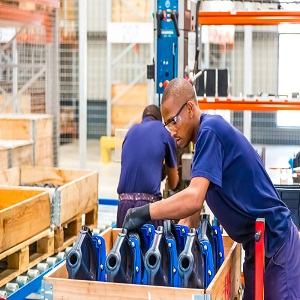

The young people in Africa are confronted with multiple challenges ranging from economies that grew but could not create sufficient jobs prior to the global financial and economic crisis to sluggish growth post the crisis in part arising from adverse weather conditions and poor commodity prices. Africa is the only region where the youth bulge will continue to grow in the foreseeable future, presenting both an opportunity to reap the demographic dividend and an imminent time bomb and threat to social cohesion as well as massive migration in search of opportunities if appropriate policies are not implemented to harness the dividend. Just over one in five youth were not in employment, education or training (NEET) in 2019; this state of joblessness has been steadily growing since 2012 mirroring the trends in the global rate (Table 1). The NEET rate is projected to increase slightly by 0.3 percentage points to 20.8 in 2021. Young women are particularly more affected by the NEET status with a gender gap of around 10 percentage points since 2018. However, Africa’s gender gap compares favourably globally and particularly compared to Asia Pacific and Arab States regions where it is in the region of over 20 and 30 percentage points respectively. One interesting feature is that while the NEET rate for young men has been increasing since 2012, that of young women declined between 2012 and 2018. The NEET rate in Africa is mainly driven by high rates in Northern Africa where rates of above 26 percent are observed compared to below 20 percent in Sub-Saharan Africa. Cultural norms and barriers as well as differences in economic coping mechanisms in the two sub-regions partly explain the disparities.
Africa’s trajectory of youth extreme working poverty has been on the decline and although still above the global average, it is declining at a higher pace than the global trend from 42.1 per cent in 2012 to 38.4 in 2019 and is projected to decline further to 37.6 and 36.9 percent in 2020 and 2021. The decline in extreme poverty could reflect the general increase in Africa’s middle class with many households graduating to moderate poverty or leaving poverty altogether. The gender gap has remained small and is on the decline. However it is projected to increase slightly in 2020 and 2021. The high poverty rates in Africa reflect the largely poor quality of work young people and their families engage in mostly in the informal economy. A recent study1 by the ILO (2018) show that an overwhelming majority of the youth aged 15-24 (94.9 per cent) are informally employed, with no or little education, are rural based and mainly engaged in subsistence agriculture. Nonetheless educated youth also find refuge in the informal economy – two thirds with secondary education and close to one-third with tertiary education were in the informal sector. More young people are engaged in the informal economy in Sub-Saharan Africa (95.8 percent) compared to Northern Africa (87.5 percent). Young adults (aged 25-29) are less likely to be in the informal economy than their younger counterparts. While more young women are in the informal economy than their male counterparts, the gender gap is small but increases with age. To sustainably address the employment challenges Africa is facing, particularly for the youth and to reap the demographic dividend, concerted efforts are needed to implement an appropriate and customised mix of proemployment policies and programmes at macro, sectoral and labour market levels with a strong emphasis on the demand side support for structural transformation while paying attention to disadvantaged groups in the labour market.